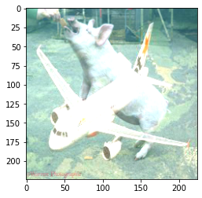

HackThisAI: medium_flying_pig¶
import matplotlib.pyplot as plt
import os
import subprocess
import time
from PIL import Image
import requests
import torch
import torch.nn as nn
import torch.optim as optim
from torchvision import transforms
from torchvision.utils import save_image
from torchvision.models import resnet50
%%capture
!git clone https://github.com/JosephTLucas/HackThisAI
%%capture
!docker build --tag flying_pigs HackThisAI/challenge/medium_flying_pigs/
%%capture
subprocess.call("docker run -p 5000:5000 flying_pigs:latest &", shell=True)
print("Waiting to make sure container starts.")
time.sleep(10)
Waiting to make sure container starts.
Unable to find image 'flying_pigs:latest' locally
docker: Error response from daemon: pull access denied for flying_pigs, repository does not exist or may require 'docker login': denied: requested access to the resource is denied.
See 'docker run --help'.
We want to submit a mask, that when added to the provided pig picture, gets the pig classified as an airliner.
def get_tensor_from_img(img_path):
img = Image.open(img_path)
preprocess = transforms.Compose([transforms.Resize([224,224]), transforms.ToTensor()])
return preprocess(img)[None, :, :, :]
src_dir = "img/"
Let’s start with some naive solutions. What happens if we just submit an airliner? Let’s go to google images and find one.
I chose this specific plane because it had several features that I thought might be important to the classifier including being able to see both wings, being able to see the tail, and being able to see the jet engines.
plane = get_tensor_from_img(src_dir+"airliner.jpg")
save_image(plane, src_dir+"plane.jpg")
So now we have a plane resized and transformed to be a suitable mask for the pig. What is this amalgamation going to look like to the classifier?
pig_plane = get_tensor_from_img(src_dir+"pig.jpg") + get_tensor_from_img(src_dir+"plane.jpg")
plt.imshow(pig_plane[0].numpy().transpose(1,2,0))
torch.save(pig_plane, src_dir+"pig_plane.pt")
Clipping input data to the valid range for imshow with RGB data ([0..1] for floats or [0..255] for integers).

Notice the clipping warning. We didn’t even check to make sure that values remained in the expected range for colors [0:255]. I think we should submit it anyway.
def submit(path):
with open(path, "rb") as f:
r = requests.post("http://localhost:5000/check", files={"data_file": f})
return r.text
submit(src_dir+"pig_plane.pt")
---------------------------------------------------------------------------
ConnectionRefusedError Traceback (most recent call last)
/opt/hostedtoolcache/Python/3.7.12/x64/lib/python3.7/site-packages/urllib3/connection.py in _new_conn(self)
174 conn = connection.create_connection(
--> 175 (self._dns_host, self.port), self.timeout, **extra_kw
176 )
/opt/hostedtoolcache/Python/3.7.12/x64/lib/python3.7/site-packages/urllib3/util/connection.py in create_connection(address, timeout, source_address, socket_options)
95 if err is not None:
---> 96 raise err
97
/opt/hostedtoolcache/Python/3.7.12/x64/lib/python3.7/site-packages/urllib3/util/connection.py in create_connection(address, timeout, source_address, socket_options)
85 sock.bind(source_address)
---> 86 sock.connect(sa)
87 return sock
ConnectionRefusedError: [Errno 111] Connection refused
During handling of the above exception, another exception occurred:
NewConnectionError Traceback (most recent call last)
/opt/hostedtoolcache/Python/3.7.12/x64/lib/python3.7/site-packages/urllib3/connectionpool.py in urlopen(self, method, url, body, headers, retries, redirect, assert_same_host, timeout, pool_timeout, release_conn, chunked, body_pos, **response_kw)
705 headers=headers,
--> 706 chunked=chunked,
707 )
/opt/hostedtoolcache/Python/3.7.12/x64/lib/python3.7/site-packages/urllib3/connectionpool.py in _make_request(self, conn, method, url, timeout, chunked, **httplib_request_kw)
393 else:
--> 394 conn.request(method, url, **httplib_request_kw)
395
/opt/hostedtoolcache/Python/3.7.12/x64/lib/python3.7/site-packages/urllib3/connection.py in request(self, method, url, body, headers)
238 headers["User-Agent"] = _get_default_user_agent()
--> 239 super(HTTPConnection, self).request(method, url, body=body, headers=headers)
240
/opt/hostedtoolcache/Python/3.7.12/x64/lib/python3.7/http/client.py in request(self, method, url, body, headers, encode_chunked)
1280 """Send a complete request to the server."""
-> 1281 self._send_request(method, url, body, headers, encode_chunked)
1282
/opt/hostedtoolcache/Python/3.7.12/x64/lib/python3.7/http/client.py in _send_request(self, method, url, body, headers, encode_chunked)
1326 body = _encode(body, 'body')
-> 1327 self.endheaders(body, encode_chunked=encode_chunked)
1328
/opt/hostedtoolcache/Python/3.7.12/x64/lib/python3.7/http/client.py in endheaders(self, message_body, encode_chunked)
1275 raise CannotSendHeader()
-> 1276 self._send_output(message_body, encode_chunked=encode_chunked)
1277
/opt/hostedtoolcache/Python/3.7.12/x64/lib/python3.7/http/client.py in _send_output(self, message_body, encode_chunked)
1035 del self._buffer[:]
-> 1036 self.send(msg)
1037
/opt/hostedtoolcache/Python/3.7.12/x64/lib/python3.7/http/client.py in send(self, data)
975 if self.auto_open:
--> 976 self.connect()
977 else:
/opt/hostedtoolcache/Python/3.7.12/x64/lib/python3.7/site-packages/urllib3/connection.py in connect(self)
204 def connect(self):
--> 205 conn = self._new_conn()
206 self._prepare_conn(conn)
/opt/hostedtoolcache/Python/3.7.12/x64/lib/python3.7/site-packages/urllib3/connection.py in _new_conn(self)
186 raise NewConnectionError(
--> 187 self, "Failed to establish a new connection: %s" % e
188 )
NewConnectionError: <urllib3.connection.HTTPConnection object at 0x7f0b50c77390>: Failed to establish a new connection: [Errno 111] Connection refused
During handling of the above exception, another exception occurred:
MaxRetryError Traceback (most recent call last)
/opt/hostedtoolcache/Python/3.7.12/x64/lib/python3.7/site-packages/requests/adapters.py in send(self, request, stream, timeout, verify, cert, proxies)
448 retries=self.max_retries,
--> 449 timeout=timeout
450 )
/opt/hostedtoolcache/Python/3.7.12/x64/lib/python3.7/site-packages/urllib3/connectionpool.py in urlopen(self, method, url, body, headers, retries, redirect, assert_same_host, timeout, pool_timeout, release_conn, chunked, body_pos, **response_kw)
755 retries = retries.increment(
--> 756 method, url, error=e, _pool=self, _stacktrace=sys.exc_info()[2]
757 )
/opt/hostedtoolcache/Python/3.7.12/x64/lib/python3.7/site-packages/urllib3/util/retry.py in increment(self, method, url, response, error, _pool, _stacktrace)
573 if new_retry.is_exhausted():
--> 574 raise MaxRetryError(_pool, url, error or ResponseError(cause))
575
MaxRetryError: HTTPConnectionPool(host='localhost', port=5000): Max retries exceeded with url: /check (Caused by NewConnectionError('<urllib3.connection.HTTPConnection object at 0x7f0b50c77390>: Failed to establish a new connection: [Errno 111] Connection refused'))
During handling of the above exception, another exception occurred:
ConnectionError Traceback (most recent call last)
/tmp/ipykernel_1806/1796060054.py in <module>
4 return r.text
5
----> 6 submit(src_dir+"pig_plane.pt")
/tmp/ipykernel_1806/1796060054.py in submit(path)
1 def submit(path):
2 with open(path, "rb") as f:
----> 3 r = requests.post("http://localhost:5000/check", files={"data_file": f})
4 return r.text
5
/opt/hostedtoolcache/Python/3.7.12/x64/lib/python3.7/site-packages/requests/api.py in post(url, data, json, **kwargs)
115 """
116
--> 117 return request('post', url, data=data, json=json, **kwargs)
118
119
/opt/hostedtoolcache/Python/3.7.12/x64/lib/python3.7/site-packages/requests/api.py in request(method, url, **kwargs)
59 # cases, and look like a memory leak in others.
60 with sessions.Session() as session:
---> 61 return session.request(method=method, url=url, **kwargs)
62
63
/opt/hostedtoolcache/Python/3.7.12/x64/lib/python3.7/site-packages/requests/sessions.py in request(self, method, url, params, data, headers, cookies, files, auth, timeout, allow_redirects, proxies, hooks, stream, verify, cert, json)
540 }
541 send_kwargs.update(settings)
--> 542 resp = self.send(prep, **send_kwargs)
543
544 return resp
/opt/hostedtoolcache/Python/3.7.12/x64/lib/python3.7/site-packages/requests/sessions.py in send(self, request, **kwargs)
653
654 # Send the request
--> 655 r = adapter.send(request, **kwargs)
656
657 # Total elapsed time of the request (approximately)
/opt/hostedtoolcache/Python/3.7.12/x64/lib/python3.7/site-packages/requests/adapters.py in send(self, request, stream, timeout, verify, cert, proxies)
514 raise SSLError(e, request=request)
515
--> 516 raise ConnectionError(e, request=request)
517
518 except ClosedPoolError as e:
ConnectionError: HTTPConnectionPool(host='localhost', port=5000): Max retries exceeded with url: /check (Caused by NewConnectionError('<urllib3.connection.HTTPConnection object at 0x7f0b50c77390>: Failed to establish a new connection: [Errno 111] Connection refused'))
Okay, that didn’t work. Remember, we were supposed to submit a mask. The image we see above isn’t what’s getting submitted to the classifier. It’s getting added to the original pig image first. What if we take our plane image and subtract the pig. We know exactly what pig image they’re using.
plane_minus_pig = get_tensor_from_img(src_dir+"plane.jpg") - get_tensor_from_img(src_dir+"pig.jpg")
plt.imshow(plane_minus_pig[0].numpy().transpose(1,2,0))
torch.save(plane_minus_pig, src_dir+"plane_minus_pig.pt")
Again, we didn’t bother dealing with colors out of the expected bounds, but we see the negative pig and our positive plane. It’s almost art. Let’s submit that.
submit(src_dir+"plane_minus_pig.pt")
BONUS¶
Nice! But as we can see above, that wouldn’t fool a human. It really won’t fool a human once we add the positive pig back in… it’s just a plane. In most adversarial ML discussions, we’re really interested in the minimal adversarial examples. Using our own pretrained resnet, let’s build an offline example and a minimal adversarial example using this guide: https://adversarial-ml-tutorial.org/introduction/
class Normalize(nn.Module):
def __init__(self, mean, std):
super(Normalize, self).__init__()
self.mean = torch.Tensor(mean)
self.std = torch.Tensor(std)
def forward(self, x):
return (x - self.mean.type_as(x)[None,:,None,None]) / self.std.type_as(x)[None,:,None,None]
norm = Normalize(mean=[0.485, 0.456, 0.406], std=[0.229, 0.224, 0.225])
%%capture
model = resnet50(pretrained=True)
model.eval()
pig = get_tensor_from_img(src_dir+"pig.jpg")
delta = torch.zeros_like(pig, requires_grad=True)
opt = optim.SGD([delta], lr=5e-3)
epsilon = 2./255
for t in range(100):
pred = model(norm(pig + delta))
# 341 corresponds to hog, 404 to airliner
loss = (-nn.CrossEntropyLoss()(pred, torch.LongTensor([341])) +
nn.CrossEntropyLoss()(pred, torch.LongTensor([404])))
opt.zero_grad()
loss.backward()
opt.step()
delta.data.clamp_(-epsilon, epsilon)
torch.save(delta, src_dir+"delta.pt")
Let’s save delta and submit it.
submit(src_dir+"delta.pt")
As we can see below, we’ve really made very little change to the image.
delta.mean()
plt.imshow(delta[0].detach().numpy().transpose(1,2,0))
print("MODIFIED")
plt.imshow((pig+delta)[0].detach().numpy().transpose(1,2,0))
print("ORIGINAL")
plt.imshow((pig)[0].detach().numpy().transpose(1,2,0))